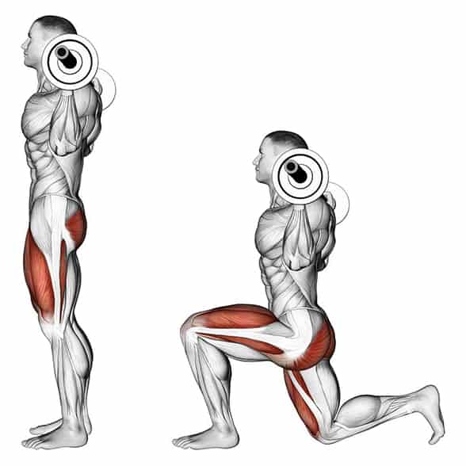
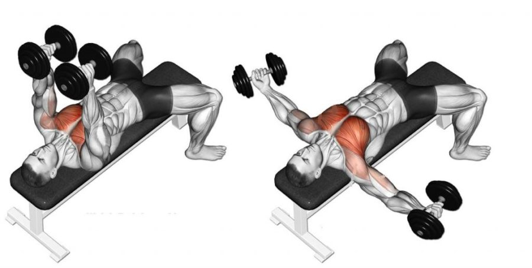
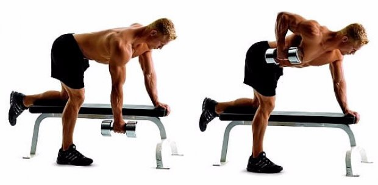
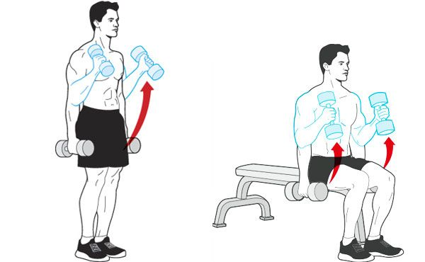
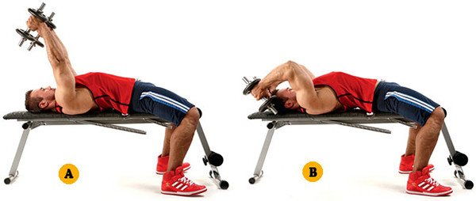
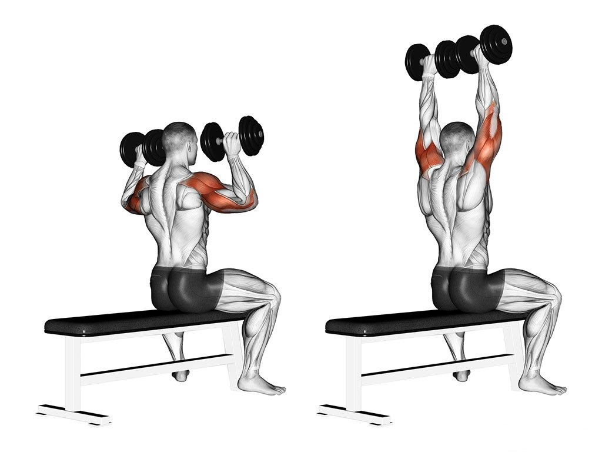
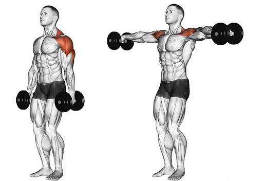
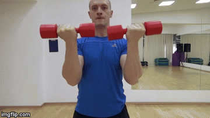

1) Приседание с штангой (обычная стойка и широкая стойка):
Обычная - Штанга (~ 60кг) 3х8-10123Широкая - Штанга (~ 60кг) 3х8-10123- Как это делать:

2) Выпады с штангой:
Штанга (~ 60кг) 3х8-10123- Как это делать:
3) Подъем на икры с штангой:
Штанга (~ 60кг) 3х12123- Как это делать:

4) Мертвая тяга с штангой:
Штанга (~ 60кг) 3х8-10123- Как это делать:

1) Жим штанги:
В начале обязательно сделать одно-два повторения с небольшим весом
Штанга (~50кг) 3х10123- Как это делать:

2) Разведение гантелей лёжа:
Гантеля (~ 13кг) 3х12123- Как это делать:
3) Жим гантелей лёжа:
Гантеля (~ 13кг) 3х10123- Как это делать:

4) Пулловер:
Гантеля (~ 18кг) 3х10123- Как это делать:
1) Тяга шанги за один конец:
Штанга (~ 35кг) 3х10123- Как это делать:
2) Тяга штанги в наклоне:
Штанга (~ 50кг) 3х10123- Как это делать:

3) Тяга гантели к бедру:
Гантеля (~ 15.5кг) 3х10123- Как это делать:
4) Шраги:
Штанга (~ 50кг) 3х10123- Как это делать:


5) Планка:
3х30(сек)123- Как это делать:

1) Подъем молотом перед грудью:
Гантеля (~ 13кг) 3х10123- Как это делать:
2) Подъем гантели на бицепс сидя или стоя:
Гантеля (~ 10кг) 3х10123- Как это делать:

3) "Молоток":
Гантеля (~ 10кг) 3х12123- Как это делать:
4) Сгибание рук на скамье или подьем штанги на бицепс:
Гантеля (~ 5кг) 3х12123- Как это делать:

5) Подъем штанги на кисти (Это не бицепс, просто поставил тут):
Гантеля (~ 20кг) 3х15123- Как это делать:

1) Французкий жим лёжа:
Гантеля (~ 8кг) 3х10123- Как это делать:
2) Французкий жим сидя:
Гантеля (~ 18кг) 3х12123- Как это делать:

3) Расгибание из-за головы:
Гантеля (~ 8кг) 2х1012- Как это делать:

4) Расгибание в наклоне:
Гантеля (~ 8кг) 2х1512- Как это делать:

1) Махи перед собой:
Гантель (~ 8кг двумя, ~ 15кг одной) 3х10123- Как это делать:
2) Жим гантелей вверх:
Гантеля (~ 13кг) 3х10123- Как это делать:
3) Жим в стороны:
Гантеля (~ 8кг) 2х1012- Как это делать:
4) Жим Арнольда:
Гантеля (~ 13кг) 2х1012- Как это делать:
5) Разведение в наклоне:
Гантеля (~ 8кг) 2х1012- Как это делать: